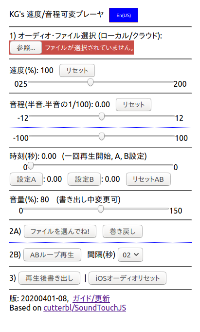
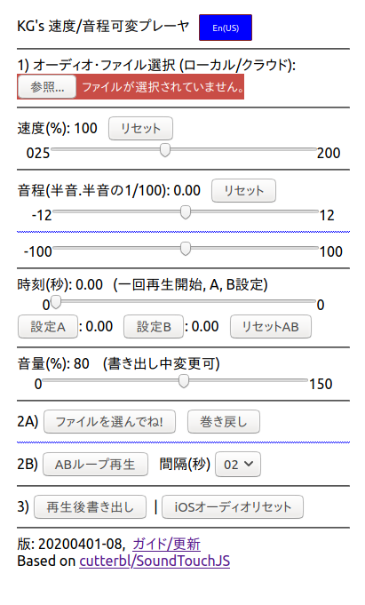

KG's ピッチ/速度可変プレーヤ
Go to English page
ファイルサイズ 700kB 未満
soundtouchjs module使用:
https://github.com/cutterbl/SoundTouchJS
以下のスクリーンショット(リンクは同じ)をクリック。
起動後に右上の「日本語」をクリックすると日本語表示に変わります。
(現在は、自動で日本語表示)
 

0. 動作確認
- (動作安定) Linux -- Firefox, Chrome
- (動作安定) Windows 10 -- Edge (Windows標準、IEは試してない)
- (動作安定) macOS -- Safari (macOS標準)
- (動作安定) Android Phone -- mobile Chrome (Android標準)
- (ときどき不安定) iPhone 6/iPodTouch mobile Safari (iPhone標準)
プログラムはJavaScriptで書きました。
したがって、すべての計算はブラウザ内で実行されます。
一度使ったら、オフラインでも使用できます。
気にいったら「ホーム画面」に追加してください。
1. 特長
- 同じプログラム (ほんの700kB) が色々な機器で動く
- インストール作業不要、オフラインで動く
- スロー再生はドラマー、ギタリスト、ピアニスト、ボーカリストに役立つ
- 詳細ピッチ調整はボーカリスト、ギタリスト、ピアニストなどに役立つ
- ピッチ/速度変更後の音声がwavファイルでダウンロード保存できる
(ダウンロードはローカルなのでネットワーク接続不要)
2. 簡単な使い方説明
音声ファイルをローカルディスクかクラウドに用意する
(wav, mp3など、各装置で再生できる形式)。
iOS(iPhone) には iCloud Drive、Android には Google Driveが便利
(参考) テスト用音源 (著作権フリー)
ダウンロードしてローカルディスクかクラウドドライブに保存してから、
このプログラムで開いてください。
iPhoneのSafariでは、多分ダウンロードしたファイルが開けないので、
一度iCloud Driveに保存する必要があるでしょう。
ボタンとスライダ
- 表示言語選択(再生していないときに可能)
- 1) 上のオーディオファイル選択でファイルを選ぶ
再生可能なファイルを指定すると "ファイルを読んでね!" が
"一回再生" に変わる
- 2A) 通常再生
- "一回再生" で一回再生 (一時停止に変わる)
- "一時停止" を押すと一時停止 (一回再生に戻る)
- (再生停止中) 時刻スライダーで再生開始位置を変更できる
- (再生停止中) "巻き戻し" で 先頭に戻る
- 再度 "一回再生" で続き、または指定時刻から再生
- 2B) 繰り返し再生
- "ABループ再生" でループ再生開始
- "ループ停止" でループ停止
- 間隔のプルダウンで連続する再生の間隔を指定 (標準 2秒)
- A、B の設定
- 再生停止中に時刻スライダを動かして 「設定A」「設定B」で決める
- または、再生中に「設定A」「設定B」を押す
- スライダー (時刻スライダ以外は再生中に動かしてよい)
- 速度 (25% to 200%)
- 音程(ピッチ) -- 上が半音単位、下は半音の1/100 (セント; cents)
- 音量 (標準 80) -- 保存音量には影響しない
- 3) 書き出し
- 「再生後書き出し」: 設定したピッチ/速度の音声をwavファイルで書き出す
- 「書き出し中止」: 書き出し中止
- "iOSオーディオリセット": iOSで音がおかしくなったときに押すと停まるはず
- 補足説明
- 書き出しには設定速度での再生時間必要
- 速度と音程スライダは書き出し中に変更しない (意図的に変更はできる)
- 音量スライダでの音量変更は書き出しに影響しない (常に100)
- 出力ファイル名は、"originalname&s90&p-188.wav"
(speed 80, pitch -1.88) のように自動設定される
- iOS12 (古めのiPhone等) では、特別な操作が必要
2. コメント
iOS 12 (iPhone6など) での書き出しデータ保存には特別な操作が必要です。
Blob ウィンドウが出てファイル名がunknownになりますが、
それをiCloud Driveにそのまま保存した後、
ファイル名を拡張子 ".wav" を含む文字列に変更します。
もし、保存するときにファイル名を変更できるなら、そのほうが簡単です。
できないのです。
iOS 13ではこの問題は発生しないかもしれませんが、古めの機器には提供されない
ので試せません。
保存に曲の再生時間かかるのは無駄ということはわかっていますが、
技術的な問題があり、まだ実装できていません。
使っているsoundtouchjs モジュールがWeb Audio APIの
OfflineAudioContextでは、今のところ動かないのです。
Source code (JavaScript and sound files)
https://github.com/goto920/nodejs/
Contact: goto at kmgoto.jp